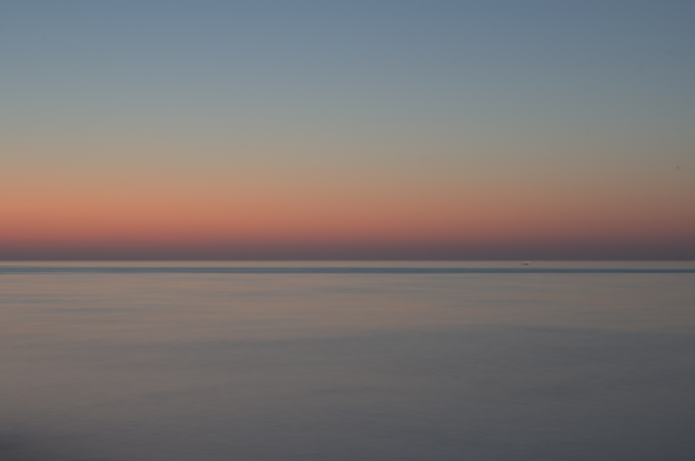

(Hint: hover your cursor over an image to see my notes on it)
Camera Report 1
"Mountain Range" | 1/80 f/4.5 29.0mm 100 ISO | SDC hill

"A Pleasant Stroll" | 1/80 f/4.5 29.0mm 200 ISO | Graveyard across from the SDC

"Yellow Flowers" | 1/80 f/4.5 18.0mm 400 ISO | Lot 23

"Defiance of Gradient" | 1/250 f/25.0 48.0mm 800 ISO | Lot 23

"Wow!" | 10" f/18.0 41.0mm 100 ISO | Breakers Beach

"Lit" | 1/800 f/5.6 300.0mm 6400 ISO | Breakers Beach
"Enjoying the Lights" | 3.2" f/3.5 18.0mm 6400 ISO | Breakers Beach